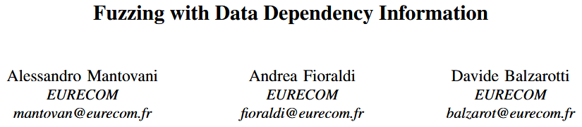
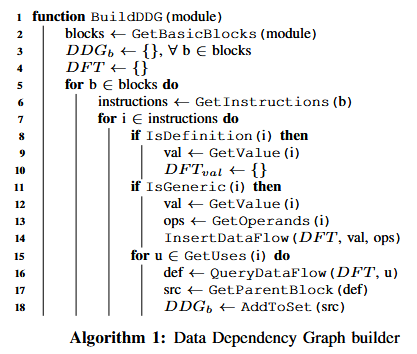
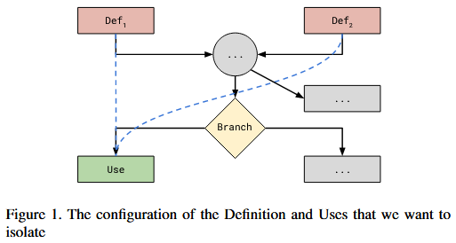
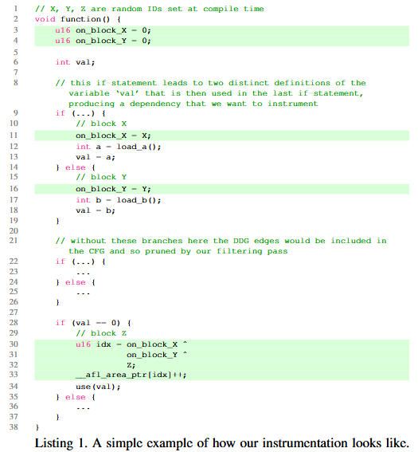
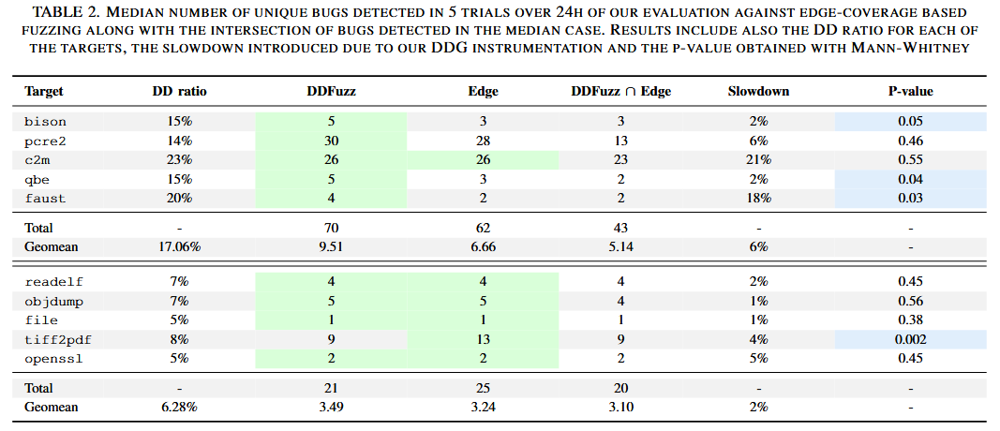

Fuzzing with Data Dependency Information [EuroS&P 2022]

作者认为数据依赖图 (DDG) 提供的定义使用对 (def-use pairs) 组合对找到易受攻击的构造是有用的. 这些依赖关系有助于模糊测试器以与标准方法不同的方式访问代码. 本文提出 DDFuzz, 不仅通过代码覆盖信息奖励模糊测试器, 还在数据依赖图中新边被触发时给予奖励. 结果表明, 在基于覆盖的模糊测试中采用数据依赖插桩是有效的解决方案, 可以帮助发现那些通过标准覆盖方法无法探索的漏洞. 在三个不同数据集的 38 个目标程序上执行时发现的 72 种不同漏洞.
Contributions
提出一种新颖的插桩方法 DDFuzz, 并展示它在 38 个目标应用上的优点和局限性
建立一个基于代码库结构的可靠标准, 用于预测何时应在模糊测试活动中采用 DDFuzz 方法
- https://github.com/elManto/DDFuzz
Methods
DDFuzz 实现为 LLVM pass (实验中使用的是LLVM 13). 作者选择 LLVM 的主要原因有两个: 首先, 它的中间表示以 SSA (Single Static Assignment) 形式输出, 这意味着每个变量只能赋值一次, 所有变量必须在首次使用之前定义. 简化在 LLVM IR 变量之间恢复依赖关系的过程. 其次, LLVM 工具链已经很好地与流行的模糊测试项目集成, 使得 DDFuzz 能够轻松地与现有的模糊测试器实现 (如AFL++) 结合使用.
DDG construction
开发静态分析部分时第一个决策是选择适当的 LLVM IR 变量来构建数据依赖图. 第一个直观的方法是通过定义使用边 (def-use edges) 来表示每个变量之间的依赖关系, 从 LLVM bitcode 中恢复每个变量的依赖. 然而, 由于位码采用 SSA 形式, 这将产生过多的依赖关系, 导致模糊测试器的反馈效果差, 且对目标二进制执行产生大量开销. LLVM 框架在构建其内部依赖图时进行了一些优化, 例如将强连通分量视为单一节点 (即 P 节点). 作者将这个图称为 , 表示通过默认的 LLVM 实现获得的图. 尽管 相较于基础策略已有改进, 但它仍不足以解决性能问题.
作者的设计: 根据 LLVM 变量在 bitcode 中的定义和使用方式, 只考虑这些变量的子集, 并恢复只涉及该子集的数据依赖关系. 第一个观察是, 在二进制级别, 实际的数据流只在内存被读取或写入时发生. 在 IR 级别, 这促使作者采用 Load 和 Store 指令作为数据流的源和汇. 此外还添加 Call 指令, 并将它们视为变量的使用, 即跟踪到达函数调用参数的依赖关系. 最后选择 Alloca 指令, 作为可能的定义-使用边的源. 尽管编译器优化过程会去除大部分由 Alloca 定义的变量, 但当这些变量在生成的 bitcode 中保持存在时, 跟踪从这些变量产生的依赖关系仍然是有用的.

算法 1 展示本文解决方案. 使用的两个主要数据结构是DDG本身和数据流跟踪器 (DFT), 它在算法开始时被初始化. DFT 是一个集合的映射, 其中键是 LLVM 值, 针对每个键, 得到一个该键依赖的 LLVM 值集合. 本方法遍历每个基本块中的所有指令 (第7行), 当遇到定义指令 (Load 和 Alloca) 时, 在 DFT 中添加一项条目, 如第一个 if 块所示 (第8-10行). 对于一般指令, 即那些既不是源也不是汇的指令, 首先提取操作数, 然后提取指令的返回值 (第12-14行). 原始的 InsertDataFlow 函数负责跟踪返回值实际上依赖于操作数变量 (第15行). 为此, 它将值 val 存储在相应的 DFT 集合中, 其中键与参与指令的操作数 ops 存在依赖关系. 内部的 for 循环遍历指令中的所有使用项 (第17行). 对于每个使用项, 通过 DFT 中的 QueryDataFlow 原语提取定义指令, 并向 DDG 中添加一条新边 (第18-20行). QueryDataFlow 遍历 DFT 的键, 查找u (使用项) 与相应集合中的元素匹配, 从而恢复 u 依赖的所有定义. 最终输出是一个数据依赖图, 其中边连接一个变量 D 的定义和一个依赖于 D 的变量的使用, 作者将此图称为 .
Filtering
为实现一个轻量级的插桩器, 且对编译后的二进制文件性能影响较小, 作者引入一组优化和过滤器, 以减少需要插桩的位置.
这个过滤阶段去除那些不会为模糊测试器提供额外反馈的依赖关系, 因为这些关联的转换已经被边覆盖 (edge coverage) 捕获. 首先, 由于参考粒度是基本块, 任何位于同一代码块内的依赖关系都不具有重要性. 同样, 连接相同两个基本块的多个依赖关系会被合并为一个. 需要记住的是, DDG 覆盖插桩的目的是帮助模糊测试器通过检查涉及某一路径的不同变量依赖关系来重新访问一个确定的程序点, 而不是帮助模糊测试器进入复杂的嵌套代码区域. 换句话说, 并不是通过访问更多的代码, 而是通过触发已经探索过的代码中的额外路径. 作者的假设是, 通过探索这些额外的依赖关系, 可以发现一些通常不会被检测到的缺陷. 以此设计的插桩器, 使得模糊测试引擎能够接收两种不同的反馈: 前者有助于测试不同的依赖关系, 后者则用于进一步探索应用程序代码. 由此, 必须考虑 DDG 和 CFG 覆盖之间的潜在交集, 这可能导致重复的反馈. 因此, 需要实现两个主要规则来过滤冗余的数据依赖关系.

第一规则 检查一个依赖关系是否存在于两个连接的基本块之间, 即其中一个基本块是另一个在 CFG 中的后继. 在这种情况下, 该依赖关系不会提供任何边覆盖已经捕获的信息, 因此只会增加开销而不会为模糊测试器提供任何有用的反馈. 因此, 在这种情况下, 作者会丢弃该数据流.
第二规则 为第一个规则的扩展, 涵盖其他已被边覆盖捕获的数据依赖关系的场景. 特别地, 作者识别两种额外类型的数据流. 第一种情况是, 变量 U 的使用依赖于一个位于 U 之前多个基本块中的单一定义 D. 在这种情况下, 作者注意到没有必要在数据结构中保留连接这两个基本块的边, 因为根据定义, 如果程序到达了 U 所在的代码块, 它必定已经通过定义 D (因为它是唯一的定义). 传统的边覆盖插桩已经在模糊测试器遵循该路径时给予了奖励, 对于这些情况, 作者不会跟踪数据流, 并且会丢弃 DDG 中的这条边. 另一种情况, 变量 U 的使用依赖于多个定义. 例如, 节点变量的使用, 考虑 Def1 和 Def2, 如图 1 所示. 在图中, 黑色箭头表示 CFG 边, 而蓝色箭头表示 DDG 边. 在这种情况下, 模糊测试器可以在达到100%的边覆盖的同时, 仅触发其中一对定义-使用关系. 实际上, 由于记录边覆盖的机制 (即当前和前一个基本块的 XOR), 执行可能始终从相同的边到达使用位置, 因此模糊测试器不会将这两条路径视为两个独立的发现. 因此, 这种类型的依赖关系是作者保留的唯一数据流类型, 因为它在奖励模糊测试器方面与标准方法 (边覆盖) 有所不同.
将过滤阶段后的 DDG 称为 , 一个只包含通过定义-使用关系表示的数据流的图, 并且每个被使用的变量至少有两个定义.
Instrumentation
通常基于 AFL 的模糊测试器通过计算当前和先前位置的 ID 的 XOR 值来记录边的访问, 并使用该值作为索引访问存储某个边被访问次数的位图. 由于 DDG 没有提供任何让模糊测试器探索更深层代码的信息, 它仅仅为改善如何对某些特定代码位置进行模糊测试. 因此, 作为第一层插桩器, 作者保留了传统的方式, 使用位图记录新边的访问.
然而, 在 DDG 的上下文中, 这种解决方案并不起作用, 因为作者想要用作 XOR 输入的两个位置不是连续的, 执行可能会经过多个中间基本块 (BB), 然后才到达包含数据依赖使用的基本块. 为解决该问题, 作者为每个包含定义的基本块添加了一个额外的标记变量, 初始值设置为 0. 当执行到该基本块时, 插桩器会将标记值更改为该块的 ID. 最后, 作者对每个包含使用的基本块进行插桩, 通过将相应的标记变量与目标基本块的 ID 进行 XOR 来生成新的位图索引. 因为 , 结果将只计算实际执行的定义, 当通过不同的数据流路径到达相同的基本块时, 会得到不同的值.

例如, 考虑列表 1 中的代码, 其中突出显示在 IR 级别插入的插桩内容. 在函数的开头, 为每个需要跟踪的定义块插入一个标记变量, 例如在示例中是 on_block_X 和 on_block_Y. 在包含定义的基本块中, 将相应的标记设置为该块的 ID (分别为X和Y). 然后, 包含使用的基本块被插桩, 用来计算与 val 相关的标记的哈希值, 并与当前块的 ID (Z) 进行 XOR. 这个哈希值被用作 AFL 位图中的索引.
Evaluation
Comparison against edge coverage
